ggplot2 is one of the visualization tools that the R system has. The others are the Base R plotting functions and the lattice package. ggplot2 is the most evolved and complete plotting package. The components of a plot, include: - the data being plotted, a data frame, or tibble (tidy data frame) - the geometric objects (circles, lines, etc.) that appear on the plot - a set of mappings from variables in the data to the aesthetics (appearance) of the geometric objects: what column x,y is,the color, the size, etc… - a statistical transformation used to calculate the data values used in the plot - a position adjustment for locating each geometric object on the plot - a scale (e.g., range of values) for each aesthetic mapping used: color_manual, x_continuous, - a coordinate system used to organize the geometric objects - the facets or groups of data shown in different plots: wrap, grid - layers, where each layer has a single geometric object, statistical transformation, and position adjustment. You can think of each plot as a set of layers of images, - theme: theme_bw(), theme_light() - The typical call to ggplot()
There are hundreds of geometries and ways to plot the data. In summary, to create a plot we need to: - call ggplot function that creates a blank canvas - specify aesthetic mappings between variables and visual aspects - add new layers of geometric objects such as geom_point, geom_bar, etc.
Two examples from datasets available in the R system: mtcars and diamonds
7.1 Diamonds dataset
7.1.1 Exploratory data analysis
Visualising distributions
library(ggplot2)library(dplyr) # or library(tidyverse)
Attaching package: 'dplyr'
The following objects are masked from 'package:stats':
filter, lag
The following objects are masked from 'package:base':
intersect, setdiff, setequal, union
We may subset the data for plotting a smaller part of the data
smaller <- diamonds %>%filter(carat <3)# set the width of the intervals in a histogram with the binwidth argument ggplot(data = smaller, mapping =aes(x = carat)) +geom_histogram(binwidth =0.1)
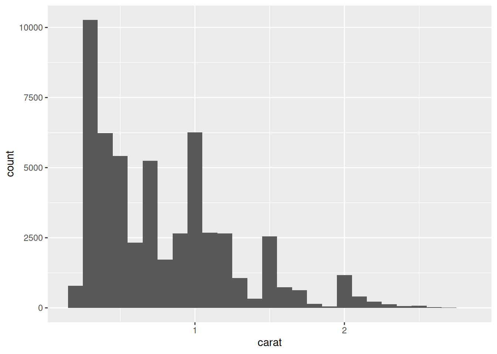
# multiple histograms, using the variables carat and cutggplot(data = smaller, mapping =aes(x = carat, colour = cut)) +geom_freqpoly(binwidth =0.1)
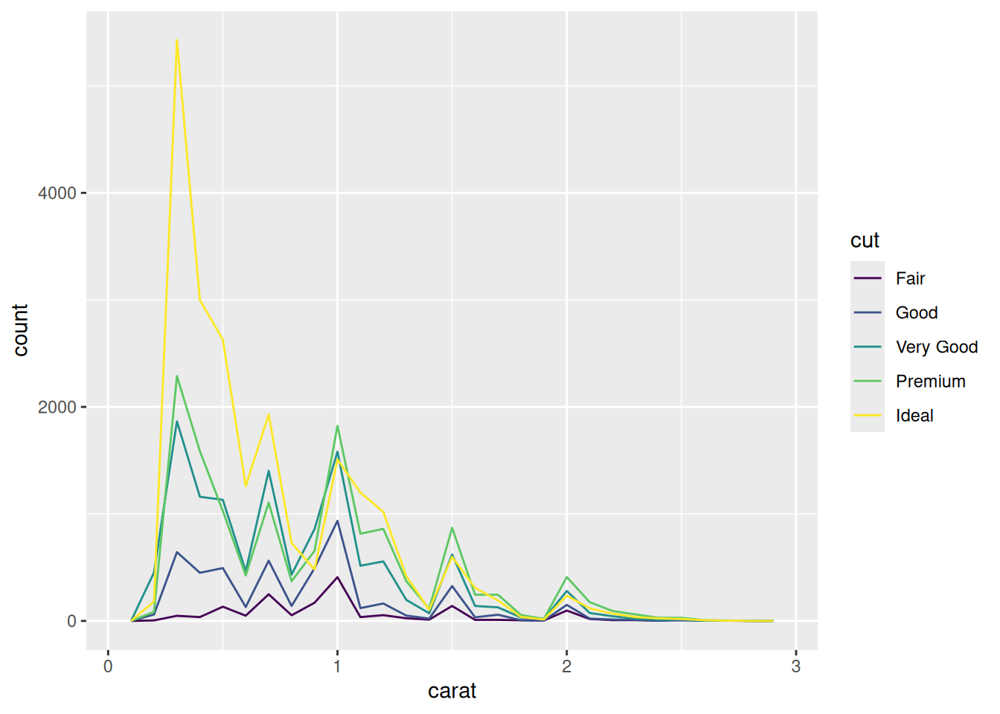
Identifying some specific points, outliers, etc. by changing the size of the x or y axis
# reducing the width of the binwithggplot(data = smaller, mapping =aes(x = carat)) +geom_histogram(binwidth =0.01)
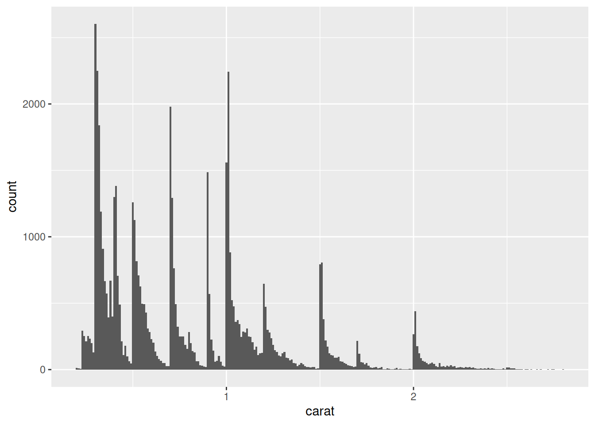
# all values in the x and y axisggplot(diamonds) +geom_histogram(mapping =aes(x = y), binwidth =0.5)
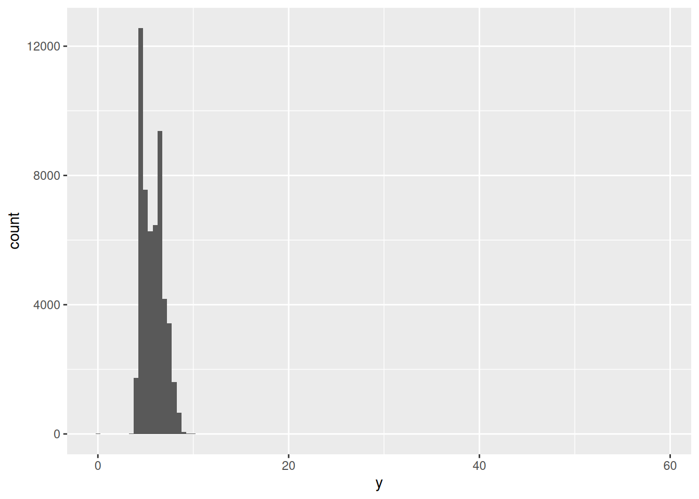
# zoom to small values in the y-axisggplot(diamonds) +geom_histogram(mapping =aes(x = y), binwidth =0.5) +coord_cartesian(ylim =c(0, 50))
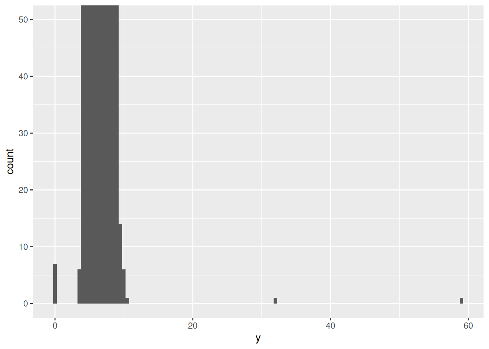
# we identify those values unusual <- diamonds %>%filter(y <3| y >20) %>%select(price, x, y, z) %>%arrange(y)unusual
ggplot(data = diamonds) +geom_count(mapping =aes(x = cut, y = color))
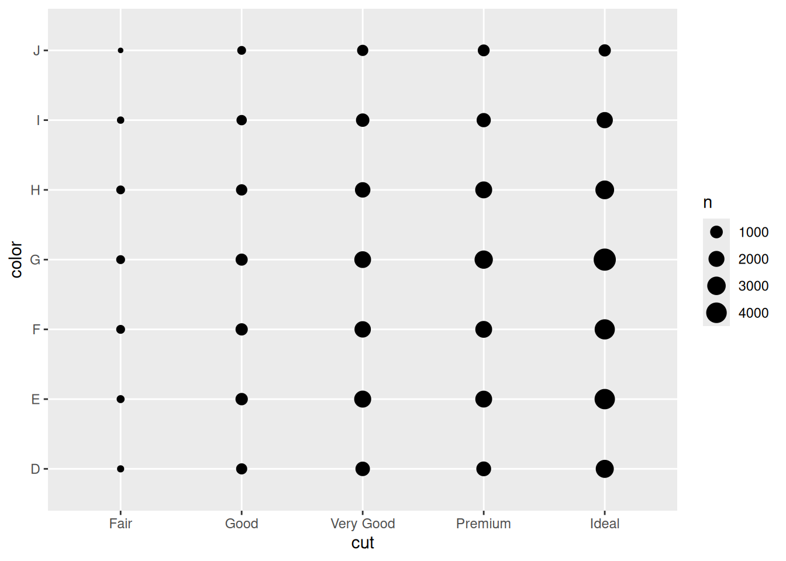
diamonds %>%count(color, cut)
# A tibble: 35 × 3
color cut n
<ord> <ord> <int>
1 D Fair 163
2 D Good 662
3 D Very Good 1513
4 D Premium 1603
5 D Ideal 2834
6 E Fair 224
7 E Good 933
8 E Very Good 2400
9 E Premium 2337
10 E Ideal 3903
# ℹ 25 more rows
# different geometrydiamonds %>%count(color, cut) %>%ggplot(mapping =aes(x = color, y = cut)) +geom_tile(mapping =aes(fill = n))
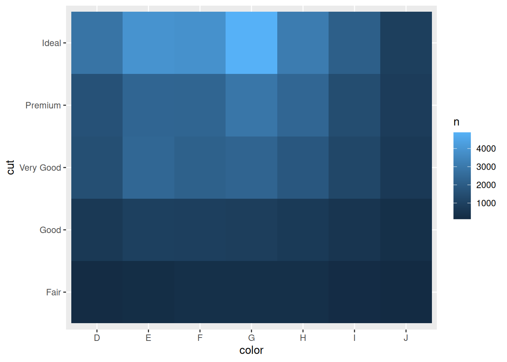
7.2 Plotting relationships diamonds
Simple plot of carats vs price
data("diamonds") # from ggplot2 ?diamondsp <-ggplot(data = diamonds, aes(x = carat, y = price))p +geom_point()
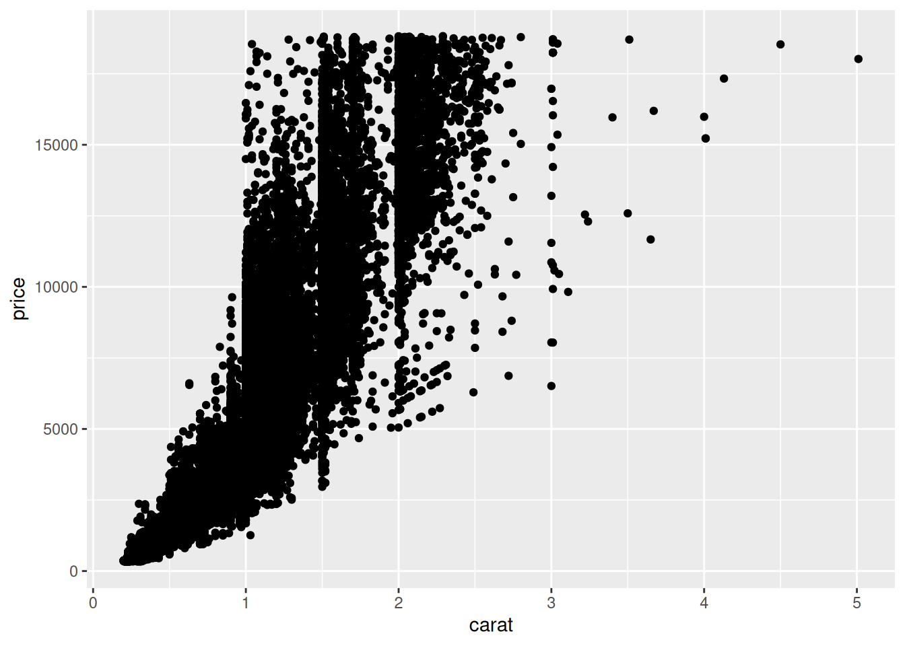
# alpha to add transparencyggplot(data = diamonds) +geom_point(mapping =aes(x = carat, y = price), alpha =1/100)
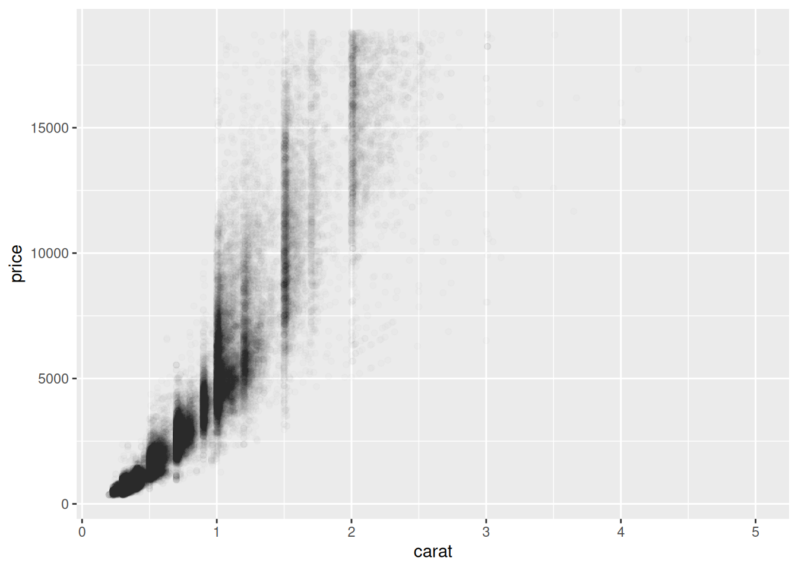
Plot the smaller subset with different geometries
ggplot(data = smaller) +geom_bin2d(mapping =aes(x = carat, y = price))
`stat_bin2d()` using `bins = 30`. Pick better value `binwidth`.
my_theme <-theme_bw()+theme(text =element_text(size =18, family ="Times", face ="bold"),axis.ticks =element_line(size =1),legend.text =element_text(size =14, family ="Times"),panel.border =element_rect(size =2),panel.grid.major =element_blank(), panel.grid.minor =element_blank() )
Warning: The `size` argument of `element_line()` is deprecated as of ggplot2 3.4.0.
ℹ Please use the `linewidth` argument instead.
Warning: The `size` argument of `element_rect()` is deprecated as of ggplot2 3.4.0.
ℹ Please use the `linewidth` argument instead.
p + my_theme
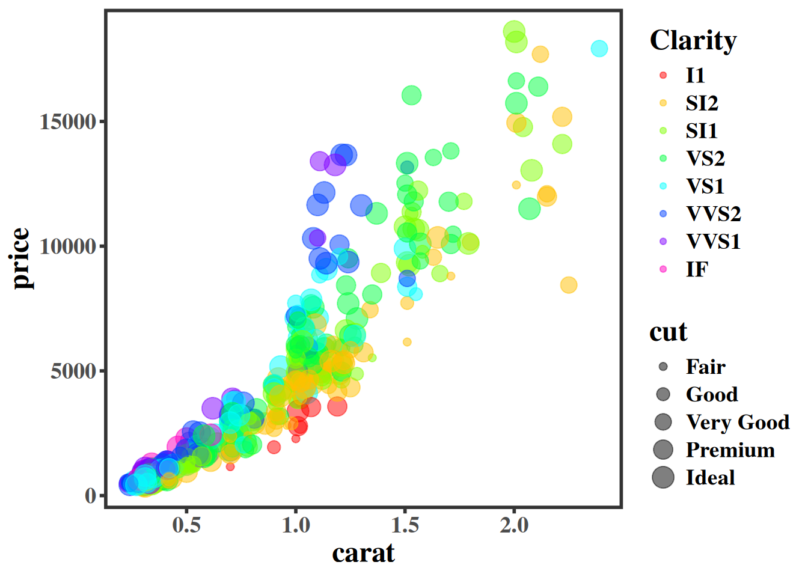
7.3 Interactivity with plotly
if (requireNamespace("plotly", quietly =TRUE)) {library(plotly) p <-ggplot(diamonds[sample(nrow(diamonds), size =100),], aes(x = carat, y = price)) +geom_point(aes(color = clarity), alpha =0.5, size =2) + my_themeggplotly(p, dynamicTicks =TRUE)} else {message("plotly is not installed; skipping interactive example.")}
plotly is not installed; skipping interactive example.
Chapter 28 from R for Data Science
library(ggplot2)data("mtcars") # from Base R ?mtcarshist(mtcars$mpg)
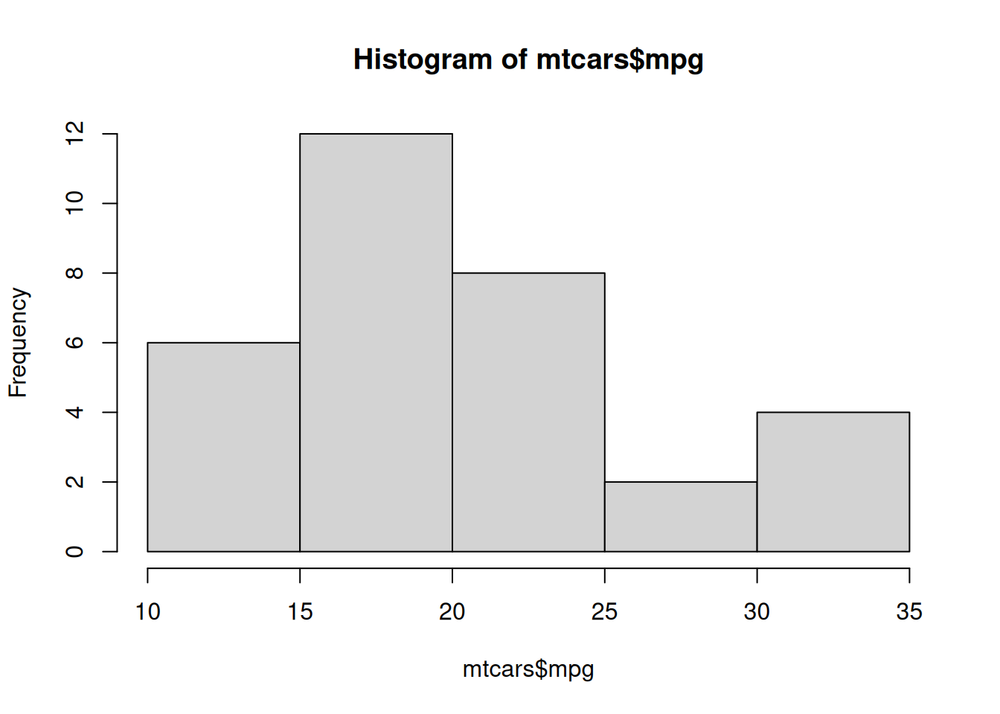
# create canvasggplot(mpg)
# variables of interest mappedggplot(mpg, aes(x = displ, y = hwy))
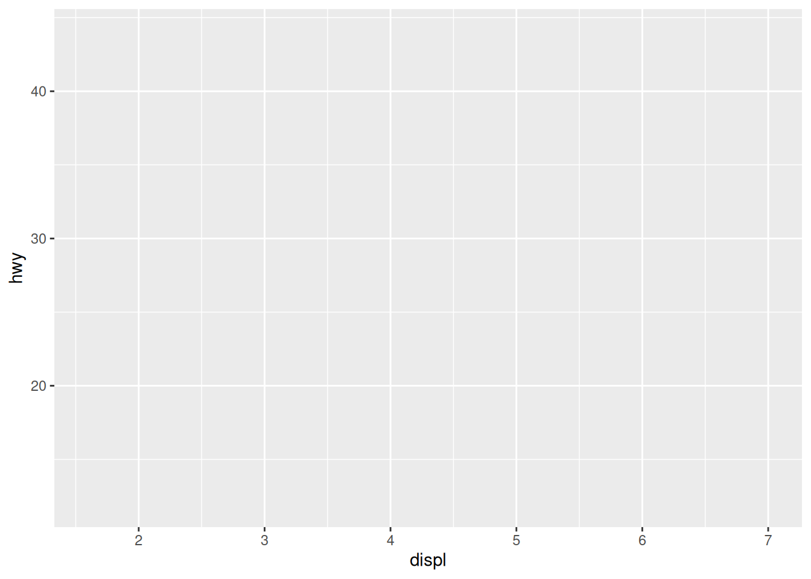
# data plottedggplot(mpg, aes(x = displ, y = hwy)) +geom_point()
7.3.1 Labels, subtitles, captions
ggplot(mpg, aes(displ, hwy)) +geom_point(aes(color = class)) +geom_smooth(se =FALSE) +labs(title ="Fuel efficiency generally decreases with engine size")
`geom_smooth()` using method = 'loess' and formula = 'y ~ x'
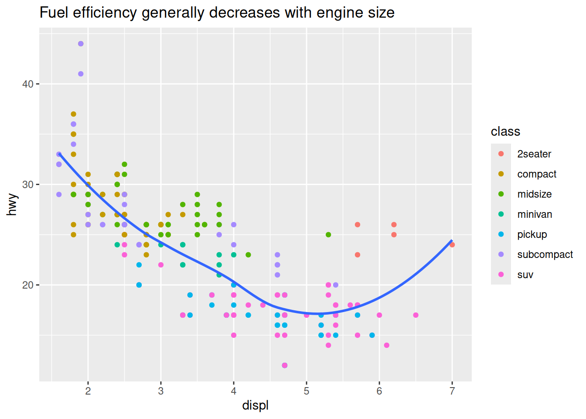
ggplot(mpg, aes(displ, hwy)) +geom_point(aes(color = class)) +geom_smooth(se =FALSE) +labs(title ="Fuel efficiency generally decreases with engine size",subtitle ="Two seaters (sports cars) are an exception because of their light weight",caption ="Data from fueleconomy.gov" )
`geom_smooth()` using method = 'loess' and formula = 'y ~ x'